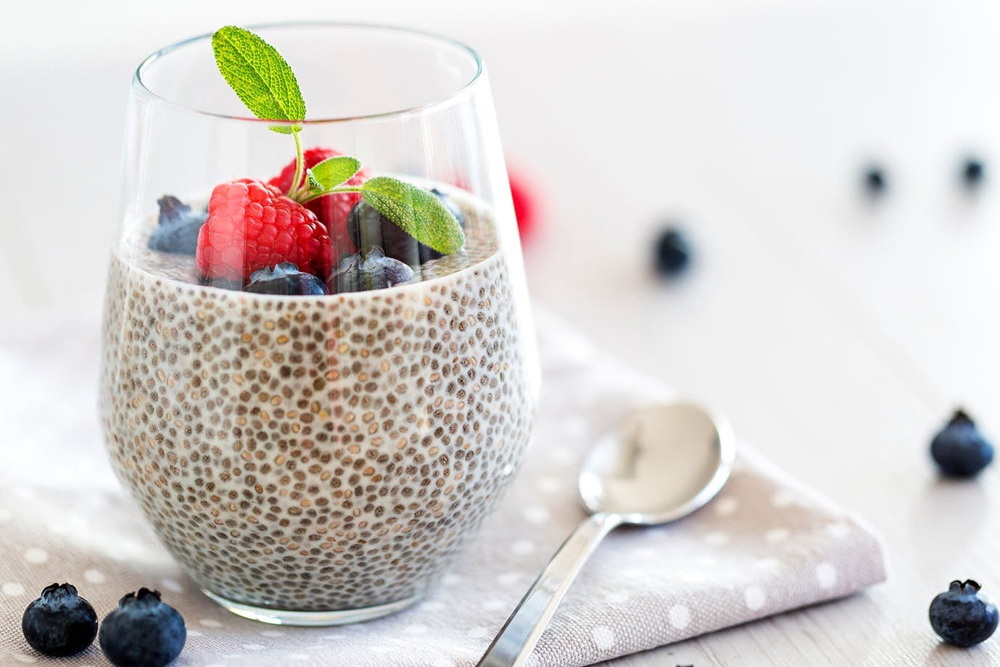

Ingredients
- 50g chia seeds
- 100g coconut milk
- 20g coconut flakes
- 20g maple syrup
- Some fresh berries for garnish
| Nutritional Value per 100g |
| Calories |
210 kcal |
| Fat |
10g |
| Carbs |
27g |
| Sugars |
12g |
| Fiber |
9g |
| Protein |
4g |
Prep time: 10 min | Cook time: 10 min | Yield: 450g
Method
- Step 1. Soak chia seeds in 40 degree Celsius water for 10 minutes.
- Step 2. Mix all the ingredients and let sit for 30 minutes.
- Step 3. Before serving add fresh berries (not included in recipe nutritional value).